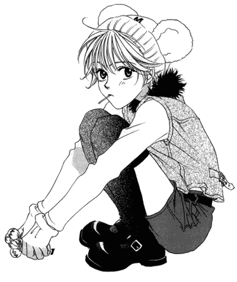
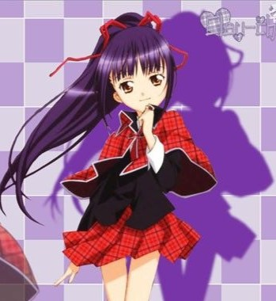

The presence of androgyny in anime can be attributed to its roots in Japanese history and culture. Sometimes it's a setup for conflict, serves the initial starting plot, or just shows up for comedy. A lot of the time, though, androgyny appears as a character, and these characters are my favourite. Whether it's drag, mistaken identity, deliberate disguise, or expression of gender and lack there-of, chances are you’ve seen it in your favourite media. These characters have impacted me in my own non-binary journey, so let's delve into them and the interesting conversations about gender expression that lay just behind them.
This is actually going to be a two-part article as I have too much to say! This first part I will focus on characters that are one gender, pretending/living as another, and in the second part I will talk about characters that are more fluid in their gender presentation. I like having a distinction here because the effect from the character changes a lot. You can really feel the difference between someone playing on one side of the line or the other in deceit and someone who's completely straddled over the line living their truth.

Let’s just get the big one out of the way: Haruhi from Ouran High School Host Club. Even though the series is a parody of high school shoujo, it became an absolute staple of that genre by being so good. I won’t go into a synopsis (nor do I think I really need to at this point), just note that while I acknowledge gender-bending shows up a lot in the show, we will focus on Haruhi here.
This is my number one pick of how gender-bending shows up in anime, not because it's the first or best time it has appeared, but because it's a good representation of the theme itself. A girl “disguising” as a boy is common in a lot of media, with its champions Zelda/Sheik, Mulan and Amanda Bynes from She’s the Man being instrumental to who I am, Haruhi is the first-stringer for anime. Another reason she’s a good posterboy is despite her gender-bending being the backbone of the plot, it isn’t the main piece of Haruhi’s character. Her defining characteristic-and I’d even argue of the show- is that she doesn’t care what gender she’s supposed to be and Haruhi shows this in ways that aren’t rebelling against the feminine or completely embracing the masculine. It’s never a deliberate act of defiance or rejection of gender; even the way she gets caught up in the events of the show are built on a misunderstanding she happened to walk into. She didn't cut her hair short and wear a drab crewneck sweater with the intent to look boyish-she had to get gum out of her hair and couldn't afford the uniform.
Haruhi learns from her drag queen dad that gender is performative; and she chooses not to be in the show. This is what really resonates with me about Haruhi that a lot of other gender-swapping media doesn't have; showing gender non-conforming as less like ‘both’ and more like ‘none’.
While the circumstances of Mizuki’s gender deceit in Hana Kimi is a more deliberate means to an end than Haruhi’s, my thoughts on her representation of gender-bending fall within a similar enough paradigm that could make writing an entire section about it redundant.
However, I would be remiss to not mention her at all so I’ll just touch on the part of both characters’ journeys that Hana Kimi covers more than Ouran: Love.
The whole point of Mizuki pretending to be a boy is so she can enroll in an all boys school to meet her athlete hero Sano. The key difference between her and Haruhi, besides Mizuki’s intent of gender-bending, is that most of the other characters don’t or aren’t supposed to know that she is not a boy. Even though Sano figures it out right away, the pair still have to navigate their romantic feelings for each other around that “secret”, shown predominantly from Mizuki’s pov as wrestling with wanting to have a romance with Sano but stopping herself because “he isn’t gay”. On top of that there is another boy, Nakatsu, who also falls in love with Mizuki but is completely in the dark, and thus has a dramatic untangling of his own perceptions of his sexuality. This piece of the story is actually one of my favourite things about this series. Nakatsu knows himself to be straight, but once he realizes he has feelings for Mizuki (which does take some time to get there) he confronts what he thinks is the reality that he may be gay. While today we could easily call that pansexual, watching this character experience turmoil like this is interesting and slapping a label on it would diminish the significance of the story. In the end, Nakatsu accepts the apparent contradiction and professes his love for Mizuki.
I highlight this part of the series because it brings into question the distinction between gender and sexuality, and also because Nakatsu is so funny when he brings his “go into everything at 100% energy” energy into his love for Mizuki. One of the core tenets of my gender queerness is: gender is made up and doesn’t matter, and when it comes to love it shouldn’t matter. For Nakatsu, he decides that it doesn’t and chooses to love Mizuki even as a boy.
Overall, Mizuki’s story is representative of a gender-queer person navigating love and relationships- even if it borders on allegorical. Being gender non-conforming makes engaging with cis people romantically tricky and does sometimes feel like you are holding onto a secret that could come out at any time and make them walk away. But it’s important to remember people can and will love you for YOU, not what category you fall into.
Shugo Chara! is my first-love anime. It’s got magical girls, cute outfits, warm and fuzzy messaging and a soft and brooding cat boy- what more could you want? My favourite character is Nadeshiko Fujisaki, the sweet and demure upperclassman to the protagonist. No, sorry, it's Nagihiko Fujisaki. Wait, no Nadeshiko. Hold on, Nagihi- Nadeshi…. No Nagi…hik…k.. but… Nade… they always have long hair though.. shiko… Fujisaki.
This character was everything to me. I used the name Nadeshiko in video games for years. As someone who just fell in love with anime-hard like many of us- her traditional Japanese-style got my interest. Her cute kimono magical transformation juxtaposed with her spontaneous intense and fiery attitude caught my eye. But her storyline stole my whole heart. In brief, Nadeshiko was a shrine maiden for her family’s shrine performing duties and ceremonies alongside her studies, club activities AND fighting baddies; just the total package. Except, she suddenly had to leave the school and shortly after her twin brother no one knew about showed up???? I won't insult you by assuming you can't figure it out here.
This is actually something that family shrines have practiced when there was no daughter to take on the shrine maiden role, but they had a son. He would step in as a shrine maiden, until puberty, when he became a “man”. I am unsure how much this actually translated into day-to-day activities in terms of living as a girl full-time, but for Nagihiko in the anime, it did 100%.
This twist revelation was like, brain breaking in the best way, and it even took years for me to fully break. While “tradition” is often portrayed in media geared towards young teens as a burden from their family they must begrudge or fight against, Fujisaki’s story was beautiful to me. Especially in a time when I myself harshly rejected anything pink or girly, Nadeshiko was living as something they weren’t for reasons their family has, and being at peace. The main theme of Shugo Chara! is being who you wish to be; not who you are but the potential that’s already inside you that you choose to work on and grow. Fujisaki had both of these potentials inside of them, and I really saw myself in that. Plus the absolute GAG of a reveal-when you’re 13 there’s really no other top.
I know, I know, “what about Ranma? That’s the whole show!”. It is the whole show; there is so much to say about this anime that I can’t do it justice in this article without turning this into a ten page essay. So I will acknowledge it here, but I will do a separate piece about Ranma ½ with a more defined topic in the future.
At one moment, I looked back at my favourite movies, books, shows and the like and finally realized the easter egg that's been there, glaring at me the whole time. All the girls being boys, and boys looking like girls, and whatever Bugs Bunny had going on, I could finally see. And I’m honestly a little embarrassed it took so long. These characters presented a kind of conflict that is so deeply personal in a sort of intangible shadow-puppet way. This can then turn into new perspectives and, for people who didn’t even know they were lost, light new paths before them.